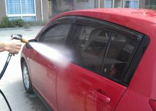
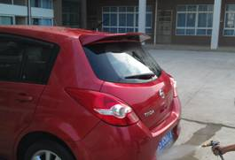
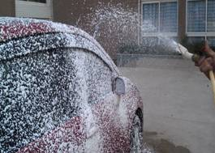
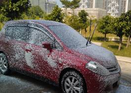
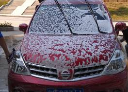
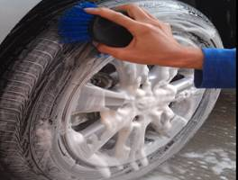
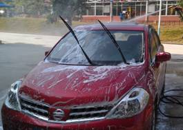
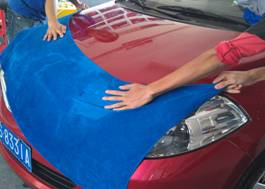
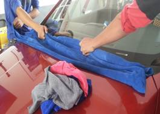
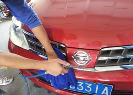

当前位置：首页 > 实训项目与考核 > 实训项目清单
实训项目清单
项目一 车容检查
1.1 汽车油漆漆样的识别
1.2 汽车漆面受损情况的识别
1.3 汽车内部常用材料的识别
1.4 汽车防爆膜的识别
1.5 汽车轮胎的识别
1.6 汽车轮胎损坏情况的识别
1.7 汽车玻璃及灯具的识别
项目二 车辆清洗
2.1 汽车外部清洗操作
2.2 汽车内室篷、壁清洗操作
2.3 汽车仪表台清洗操作
2.4 汽车座椅清洗操作
2.5 汽车安全带清洗操作
项目三 车体美容
3.1 汽车漆面的研磨抛光操作
3.2 汽车漆面的手工上蜡操作
3.3 汽车漆面柏油清除
3.4 汽车轮胎的护理
3.5 汽车玻璃的护理
3.6 汽车灯具的护理
项目四 设备维护与劳动安全
4.1 清洗设备的使用维护
4.2 常用辅助工具的使用维护
4.3 消防安全
4.4 劳动安全防护
项目流程
表1 汽车车身清洗流程
| 环节 | 项目 | 具体程序 | 操作目的及注意事项 | 作业示意图 |
|---|---|---|---|---|
| 1 | 准备工作 | 1）准备相关的清洗用品及工具设备。 2）检查车辆状况，如发现车身刮蹭或者划痕，需要及时告知车主。 3）将车驻停在清洗工位，确保施工安全，检查门窗状态及重点清洗部位。 |
目的： 1）保证施工作业安全 2）避免不必要纠纷。 |
|
| 2 | 冲淋 | 1）将高压水枪调到低压，对车辆进行初步冲淋。 2）等待4～5min，待全车身充分湿润。 3）将高压水枪调到高压，对车身进行二次冲淋。 |
目的： 1)湿润车身，冲掉车身上粘附的沙尘颗粒。 2)冲淋重点是车身中下部 注意事项： 1）第一遍冲淋需要采用低压，如果一上来就采用高压，就相当于推动沙粒和污泥在车身表面作摩擦运动，这样很容易损伤车身漆面。 2）第一遍冲淋一定要全面，需要采用自上而下、自前而后的顺序进行冲淋，对车身特别脏污的地方（轮罩、挡泥板、底盘等），应进行反复冲刷，直至冲净。 |
 |
| 3 | 涂抹清洗液 | 1）检查清洗剂的液位，确保符合工作要求。 2）连接泡沫机与空气压缩机，调试压力值在标准范围内（0.2～0.4Mpa）。 3）开启喷射阀，自上而下对车顶、风窗玻璃、发动机盖、后备箱盖、车身侧面、灯具、保险杠、车轮等进行喷洒。 此步骤，也可以用海绵沾清洗液均匀擦洗车身表面、喷洒专业洗车水蜡等方法完成。 |
1）用泡沫机进行喷洒，一定要等到压力达到规定的压力范围内（0.2～0.4Mpa），才能进行喷洒，如果压力过低，将不能形成有效的泡沫，易造成喷洒不均匀，清洗效果不好；如果压力过高，将会对仪器造成负面影响，并且不方便操作。 2）喷洒时，一定要实现全车身均匀覆盖，不能喷洒的太厚，太厚了浪费清洗液，并且不易冲洗，太薄了起不到清洁效果。 |
 |
| 4 | 擦洗 | 1）待均匀喷洒清洗液泡沫，覆盖整个车身。 2）分工协作，对车身上的不同部位进行擦洗。 |
1）擦洗时，需要根据不同的车身部位选用合适的擦洗工具。 2）擦洗时，需要检查擦洗的毛巾是否洁净，用力均匀，并且需要边擦拭边清洗，切忌一路擦洗到底，因为毛巾很容易粘附颗粒和灰层，这样在擦拭过程中，对车漆表面会造成损伤。 |
 |
| 5 | 轮胎轮毂清洗 | 1)对轮胎轮毂部分喷洒洗车液。 2）用长毛刷对轮胎部分进行刷洗。 3)用圆头刷对轮毂部分进行刷洗。 4)用牙刷对轮辐间的缝隙进行刷洗。 5)用软钢刷对锈蚀部分进行刷洗。 |
1)刷洗时，针对不同部位选用不同的刷洗工具。 后续的章节中会详细介绍轮胎轮毂清洗护理，所以在此简略。 |
 |
| 6 | 冲洗 | 冲洗的流程与冲淋的流程相似，冲洗的重点在于汽车车身中部以上的部位。 | 1）冲洗时一定要依照从上往下的顺序，水平方向可以从前往后或者从后往前冲洗。 2）水枪在冲洗过程中不宜频繁来回摆动，容易将冲洗下来的污水冲到干净的一侧。 |
 |
| 7 | 擦干 | 1）用半湿性大毛巾将整个车身从前至后先预擦一遍。 2）待车身中部及下部大部分水分被吸干之后，用干毛巾细擦一遍。 |
1）必须擦干所有的水痕，特别是一些不太容易擦拭的地方，比如雨刮器，车身底部等。 2）根据擦干流程及部位不同，选用合适的工具。 |
 |
| 8 | 吹干 | 1)通过空气压缩机的高压空气管连接风枪。 2）对发动机盖边沿及内侧、车门边缘内侧、车门把手内侧、后备箱边沿内侧、油箱盖内侧等凹进去的地方进行吹干 |
1）注意风枪的正确使用。 2）吹干时，需要一手拿着压缩空气枪，一手拿着干净抹布，边吹边抹，直到吹干为止。 3）需要吹干所有的水分，以防金属件生锈，橡胶件老化发霉。 |
 |
上一页 1 2 3 4 5 6 7 8 下一页